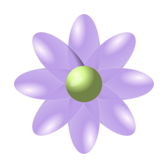
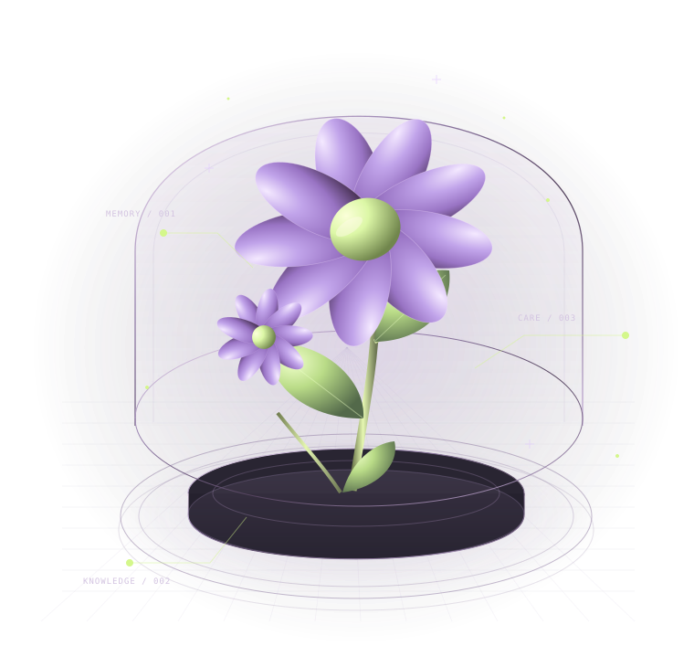
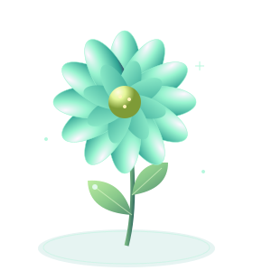

01 / KNOWLEDGE

What you know.
A repair trick. A recipe. A new way of seeing. Everyday knowledge becomes a resource everyone can reach.
Find a little wisdomCommon Ground · 2086
Write down a memory, something you learned, or something you want to share. It becomes a plant in the garden. Come back whenever you have more to add.

COMMON GROUND / 2086The greenhouseAbout this place
A street you used to walk down. Something a friend said. The first time you fixed something yourself. Write a few lines, then add to them later. A seed becomes a bud after one new entry and a flower after two.
In 2086, community gardens are gateways to a planetary commons. Walk into a neighborhood greenhouse, or visit from your oldest screen. Both open the same world.
I imagined this as a place neighbors could use together. Someone might leave a recipe; another person might return months later with a memory of cooking it.
What you can plant

A repair trick. A recipe. A new way of seeing. Everyday knowledge becomes a resource everyone can reach.
Find a little wisdom
The sound of a street. A grandmother’s words. A place that changed. Personal histories find room to live on.
Wander through memories
Time, company, or a hand getting started. Asking and offering sit side by side. Everyone has a place here.
Discover an invitationHave something in mind?